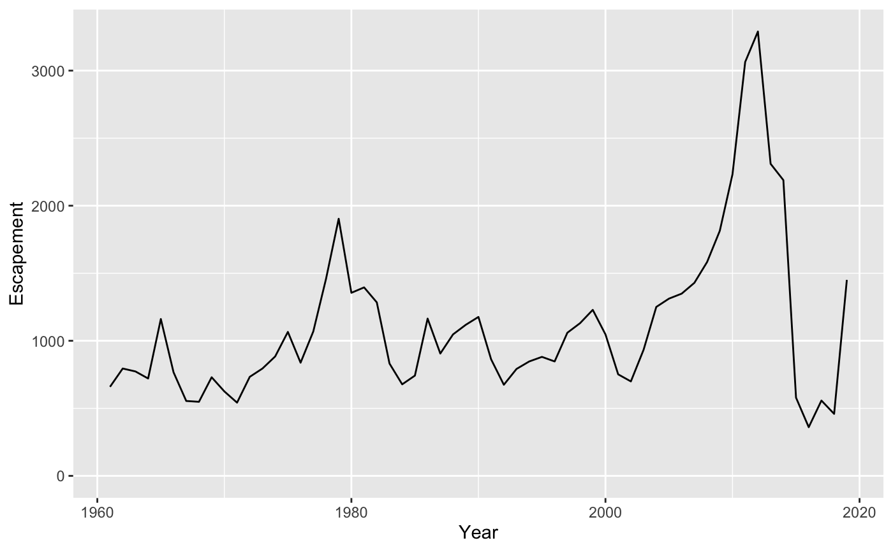

Annual Rainbow Trout and Kokanee datasets for Kootenay Lake.
fishery, gerrard and kokanee
fishery
gerrard
kokanee
library(ggplot2)#> Want to understand how all the pieces fit together? Buy the ggplot2 #> book: http://ggplot2.org/book/ data(gerrard) gerrard$Escapement <- gerrard$PeakCount * 3.08 ggplot(data = gerrard, aes(x = Year, y = Escapement)) + geom_line() + expand_limits(y = 0)